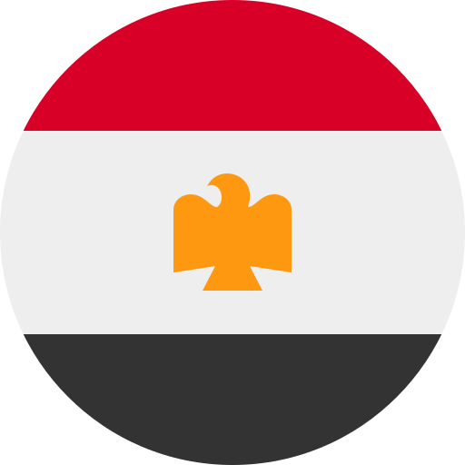

Tokoh / Pemimpin
Masa / Tarikh
Tempat / Negeri
Peristiwa / Konflik
Pertubuhan / Parti
Kerajaan / Entiti Politik
Pentadbiran / Dasar
Perjanjian / Dokumen
Istilah / Konsep
Bab 9 · Perlembagaan Persekutuan Tanah Melayu 1957
Subtopik 9.1
Usaha Rundingan Kemerdekaan
Subtopik ini menerangkan usaha Tunku Abdul Rahman dan wakil Raja-raja Melayu daripada Parti Perikatan berunding dengan kerajaan British di Lancaster House, London dari 18 Januari hingga 6 Februari 1956, sehingga termeterainya Perjanjian Kemerdekaan Tanah Melayu dan penetapan tarikh kemerdekaan pada 31 Ogos 1957.
Ringkasan 9.1
Bagaimanakah Persekutuan Tanah Melayu mencapai kemerdekaan tanpa peperangan?
 Persekutuan Tanah Melayu mencapai kemerdekaan melalui jalan rundingan yang melibatkan Raja-raja Melayu, pemimpin tempatan dan kerajaan British. Kerjasama serta persefahaman semua pihak berjaya membuka jalan ke arah pembentukan sebuah negara yang berdaulat.
Persekutuan Tanah Melayu mencapai kemerdekaan melalui jalan rundingan yang melibatkan Raja-raja Melayu, pemimpin tempatan dan kerajaan British. Kerjasama serta persefahaman semua pihak berjaya membuka jalan ke arah pembentukan sebuah negara yang berdaulat.
Usaha Rundingan Kemerdekaan dapat difahami melalui enam bahagian utama:
Bahagian Pertama
 Faktor yang Mendorong Usaha Rundingan Kemerdekaan
Faktor yang Mendorong Usaha Rundingan Kemerdekaan 
 Beberapa faktor mendorong usaha mencapai kemerdekaan melalui rundingan.
Beberapa faktor mendorong usaha mencapai kemerdekaan melalui rundingan.
 Keadaan selepas Perang Dunia Kedua menyaksikan banyak negara membebaskan diri daripada penjajahan:
Keadaan selepas Perang Dunia Kedua menyaksikan banyak negara membebaskan diri daripada penjajahan:

Mesir mencapai kemerdekaan Burma mencapai kemerdekaan
 Kebangkitan negara-negara tersebut mendorong perjuangan kemerdekaan di Persekutuan Tanah Melayu.
Kebangkitan negara-negara tersebut mendorong perjuangan kemerdekaan di Persekutuan Tanah Melayu.
 Kerajaan British memberikan jaminan untuk membantu Persekutuan Tanah Melayu mencapai berkerajaan sendiri secepat mungkin.
Kerajaan British memberikan jaminan untuk membantu Persekutuan Tanah Melayu mencapai berkerajaan sendiri secepat mungkin.
 Pilihan Raya Umum 1955 menjadi asas pembentukan perlembagaan ke arah berkerajaan sendiri.
Pilihan Raya Umum 1955 menjadi asas pembentukan perlembagaan ke arah berkerajaan sendiri.
Bahagian Kedua
 Kepentingan Rundingan Kemerdekaan
Kepentingan Rundingan Kemerdekaan 
 Tunku Abdul Rahman dan wakil Raja-raja Melayu menjelaskan kepentingan misi rundingan ke London.
Tunku Abdul Rahman dan wakil Raja-raja Melayu menjelaskan kepentingan misi rundingan ke London.
 Rundingan bertujuan membincangkan:
Rundingan bertujuan membincangkan:
 Rundingan ini mendapat sokongan pelbagai kaum tanpa mengira ideologi politik.
Rundingan ini mendapat sokongan pelbagai kaum tanpa mengira ideologi politik.
 Antara penyokong rundingan ialah:
Antara penyokong rundingan ialah:
 Ahmad Boestamam menyeru rakyat supaya menyokong rombongan ke London.
Ahmad Boestamam menyeru rakyat supaya menyokong rombongan ke London.
Bahagian Ketiga
 Perjalanan Rombongan ke London
Perjalanan Rombongan ke London 
 Perjalanan rombongan kemerdekaan berlaku mengikut kronologi berikut:
Perjalanan rombongan kemerdekaan berlaku mengikut kronologi berikut:
 Tunku Abdul Rahman berangkat dari Kuala Lumpur ke Singapura dengan kapal terbang.
Tunku Abdul Rahman berangkat dari Kuala Lumpur ke Singapura dengan kapal terbang.
 1 Januari 1956, pukul 5.00 petang, rombongan menaiki kapal laut M.V. Asia dari Pelabuhan Tanjung Pagar, Singapura.
1 Januari 1956, pukul 5.00 petang, rombongan menaiki kapal laut M.V. Asia dari Pelabuhan Tanjung Pagar, Singapura.
 Rombongan singgah di Karachi, Pakistan.
Rombongan singgah di Karachi, Pakistan.
 Dari Karachi, rombongan menaiki kapal terbang menuju ke London.
Dari Karachi, rombongan menaiki kapal terbang menuju ke London.
 14 Januari 1956, rombongan tiba di London.
14 Januari 1956, rombongan tiba di London.
 Dianggarkan 10 ribu orang menghantar rombongan kemerdekaan di Tanjung Pagar, Singapura.
Dianggarkan 10 ribu orang menghantar rombongan kemerdekaan di Tanjung Pagar, Singapura.
 Tunku Abdul Rahman memilih perjalanan melalui laut ke Karachi.
Tunku Abdul Rahman memilih perjalanan melalui laut ke Karachi.
 Tempoh pelayaran digunakan untuk berbincang dengan wakil Raja-raja Melayu.
Tempoh pelayaran digunakan untuk berbincang dengan wakil Raja-raja Melayu.
 Perbincangan ini bertujuan menyusun strategi sebelum berunding dengan kerajaan British.
Perbincangan ini bertujuan menyusun strategi sebelum berunding dengan kerajaan British.
Bahagian Keempat
 Rundingan Kemerdekaan di London
Rundingan Kemerdekaan di London 
 Rundingan berlangsung dari 18 Januari 1956 hingga 6 Februari 1956.
Rundingan berlangsung dari 18 Januari 1956 hingga 6 Februari 1956.
 Rundingan diadakan di Lancaster House, London.
Rundingan diadakan di Lancaster House, London.
 Rundingan melibatkan wakil Raja-raja Melayu, Parti Perikatan dan British.
Rundingan melibatkan wakil Raja-raja Melayu, Parti Perikatan dan British.
"Rombongan saya sedang berusaha bagi mendapatkan taraf berkerajaan sendiri untuk Persekutuan Tanah Melayu dengan serta-merta dan kemerdekaan penuh pada tahun hadapan."
— Tunku Abdul Rahman
 Perkara yang dipersetujui oleh pihak British:
Perkara yang dipersetujui oleh pihak British:
 Tuntutan Perwakilan Tanah Melayu:
Tuntutan Perwakilan Tanah Melayu:
 Berunding mengenai:
Berunding mengenai:
 Sheikh Abdullah Fahim ialah ulama besar dari Kepala Batas, Pulau Pinang.
Sheikh Abdullah Fahim ialah ulama besar dari Kepala Batas, Pulau Pinang.
 Sheikh Abdullah Fahim diminta memberikan pandangan tentang penetapan tarikh kemerdekaan.
Sheikh Abdullah Fahim diminta memberikan pandangan tentang penetapan tarikh kemerdekaan.
 Tarikh 31 Ogos 1957 dipilih selepas pandangan beliau diambil kira.
Tarikh 31 Ogos 1957 dipilih selepas pandangan beliau diambil kira.
Bahagian Kelima
 Hasil Rundingan
Hasil Rundingan 
 Rundingan menghasilkan laporan setebal 20 halaman.
Rundingan menghasilkan laporan setebal 20 halaman.
 8 Februari 1956, kerajaan British bersetuju memberikan kemerdekaan melalui Perjanjian Kemerdekaan Tanah Melayu.
8 Februari 1956, kerajaan British bersetuju memberikan kemerdekaan melalui Perjanjian Kemerdekaan Tanah Melayu.
 Kedua-dua pihak bersetuju membentuk Suruhanjaya Perlembagaan.
Kedua-dua pihak bersetuju membentuk Suruhanjaya Perlembagaan.
 Suruhanjaya tersebut bertanggungjawab merangka perlembagaan negara.
Suruhanjaya tersebut bertanggungjawab merangka perlembagaan negara.
Bahagian Keenam
 Sambutan Bersejarah
Sambutan Bersejarah 
 20 Februari 1956, rombongan merdeka tiba di Lapangan Terbang Batu Berendam, Melaka.
20 Februari 1956, rombongan merdeka tiba di Lapangan Terbang Batu Berendam, Melaka.
 Rombongan diarak ke Padang Banda Hilir, Melaka.
Rombongan diarak ke Padang Banda Hilir, Melaka.
 Lebih kurang 100 ribu orang hadir dari seluruh negara, datang menaiki bas, lori dan berjalan kaki.
Lebih kurang 100 ribu orang hadir dari seluruh negara, datang menaiki bas, lori dan berjalan kaki.
 Tunku Abdul Rahman mengumumkan tarikh kemerdekaan pada 31 Ogos 1957.
Tunku Abdul Rahman mengumumkan tarikh kemerdekaan pada 31 Ogos 1957.
 Orang ramai melaungkan "Merdeka" dengan penuh semangat.
Orang ramai melaungkan "Merdeka" dengan penuh semangat.
 Memorial Pengisytiharan Kemerdekaan diwujudkan di Padang Banda Hilir, Melaka untuk mengabadikan detik bersejarah ini.
Memorial Pengisytiharan Kemerdekaan diwujudkan di Padang Banda Hilir, Melaka untuk mengabadikan detik bersejarah ini.
 Sambutan ini membuktikan kesungguhan semua pihak dalam memperjuangkan kemerdekaan.
Sambutan ini membuktikan kesungguhan semua pihak dalam memperjuangkan kemerdekaan.
 Keputusan pemimpin negara perlu dihormati demi mengekalkan keharmonian negara.
Keputusan pemimpin negara perlu dihormati demi mengekalkan keharmonian negara.
Kebijaksanaan pemimpin dan perpaduan rakyat menjadi asas penting kejayaan rundingan kemerdekaan Tanah Melayu.
 Usaha Rundingan Kemerdekaan berjaya membuka jalan kepada kemerdekaan Persekutuan Tanah Melayu melalui perundingan dan kerjasama pelbagai pihak:
Usaha Rundingan Kemerdekaan berjaya membuka jalan kepada kemerdekaan Persekutuan Tanah Melayu melalui perundingan dan kerjasama pelbagai pihak:
 Rundingan ini membuktikan bahawa kebijaksanaan pemimpin, sokongan rakyat dan semangat perpaduan menjadi asas penting dalam mencapai kemerdekaan negara.
Rundingan ini membuktikan bahawa kebijaksanaan pemimpin, sokongan rakyat dan semangat perpaduan menjadi asas penting dalam mencapai kemerdekaan negara.